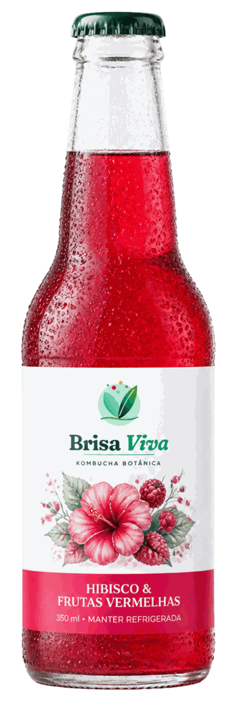

Abrir Imagem ↗
TAKE 01 • HERO & CONDENSAÇÃO
3.0 Segundos
A Garrafa Gelada Respirando Frescor
A câmera faz um movimento orbital suave e lento ao redor da garrafa escura. Gotículas de condensação escorrem lentamente pelo vidro, destacando o rótulo nítido de Hibisco & Cranberry com luz quente de estúdio.
PROMPT I2V (VEO 2 / IMAGE-TO-VIDEO)
Extreme macro slow cinematic pan around the cold amber glass bottle of kombucha. Natural condensation droplets slowly rolling down the glass surface. Crisp natural studio lighting with warm rim light, shallow depth of field, photorealistic, 4k 60fps slow motion.
🔊 Áudio sugerido: Som ambiente suave de estúdio e estalo nítido da tampa de metal abrindo (segundo 0:02).